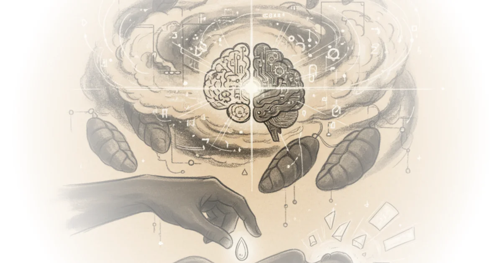

Nate B Jones delivers a jarring diagnosis for the AI industry: you can build the most impressive product on the market and still be structurally doomed if you don't own the foundation it stands on. While the tech world celebrates Perplexity's new "Computer" agent as a miracle of orchestration, Jones argues it is actually a "cautionary tale" about the fragility of the middle layer in a stack that is rapidly consolidating. This is not a critique of execution; it is a warning that in 2026, the winners will be those who own the models and the distribution, leaving everyone else to rent their existence.
The Illusion of the Middle Layer
Jones opens with high praise for the product itself, noting that Perplexity shipped the "best Agentic product of the month" on February 25th. He describes a system that "routes work across 19 different Frontier models" and "spawns sub agents" to deliver finished artifacts while you sleep. The execution is undeniably sharp. Perplexity has already made bold moves, such as killing their ad business to prioritize trust, a decision that positions them to target "$650 million in 2026 revenue."

However, the brilliance of the product masks a fatal flaw. Jones points out that Perplexity's "core reasoning engine runs on a direct competitor's model," while their research and speed layers rely on other rivals. As Jones puts it, "Every model provider they depend upon is simultaneously building the exact product Computer competes with." This creates a terrifying asymmetry: Perplexity is building a house on land owned by the very people trying to evict them.
"Good execution on the wrong layer of the stack will not save you."
This argument gains weight when viewed against the backdrop of the industry's rapid consolidation in early 2026. Jones details how the market stratified in just six weeks, with model providers like Anthropic and OpenAI moving vertically. For context, while Perplexity was orchestrating third-party models, Anthropic launched "Claude Co-work" on January 13th, a tool that "doesn't need 19 models. It has one and it owns it." The contrast is stark. One company is renting the tools; the other is building the factory.
Critics might argue that Perplexity's ability to route across multiple models offers a flexibility that single-model providers cannot match. Yet, Jones suggests this flexibility is a trap. If the underlying providers change pricing or access terms, Perplexity's margins evaporate. He notes that reports have already surfaced of Anthropic banning users who powered open-source agents with their credentials. If this logic extends to orchestration layers, the risk moves from theoretical to "very very practical."
The Squeeze from Above and Below
The danger for companies like Perplexity isn't just competition from the bottom; it's encroachment from the top. Jones explains that the "context layer"—the proprietary data and domain expertise that middleware companies rely on as a moat—is being eaten by hyperscalers. OpenAI's new "Frontier" platform, for instance, connects enterprise data warehouses and CRM systems directly, effectively bypassing the need for third-party orchestration.
"The hyperscalers are not neutral referees," Jones writes. "They are coming for the tokens."
This is the crux of the economic argument. Cloud providers are spending hundreds of billions on infrastructure and need to fill that capacity with token usage to justify their valuations. They cannot afford to be neutral. Jones highlights that Amazon is co-building the stateful runtime environment for Frontier on AWS, while Microsoft has locked in a 20% revenue share from OpenAI through 2032. Every layer a hyperscaler controls generates tokens that benefit their own infrastructure bets.
"If you don't own the layer below or the relationship above, you're just borrowing time."
This dynamic mirrors historical disruptions in travel agents and media companies, where the middle layer was squeezed out by platform owners. Jones argues that the "demand signal" for agents is massive, but the trust problem is equally so. He references the rise of "OpenClaw," an open-source agent that hit 100,000 GitHub stars in late January before security flaws led to data exfiltration issues. Even as users flocked to it, the industry realized that only those with deep control over the stack could ensure safety.
A counterargument worth considering is that domain expertise remains a viable moat. Jones concedes that if a company has "proprietary data" or "regulatory knowledge from years of compliance," there is still value. However, he warns that most companies claiming domain moats haven't done the rigorous thinking to see if that expertise survives the consolidation of the context layer. If your value is just connecting systems, OpenAI's Frontier can do that now with forward-deployed engineers.
The Verdict on Perplexity Computer
Despite the structural warnings, Jones admits that Perplexity Computer is "really, really good." It allows users to describe an outcome and have the system decompose it into tasks, running asynchronously for hours or months. It handles complex workflows like competitive intelligence, financial analysis, and even outbound sales automation by spawning specialized sub-agents.
The product is a "cloud-based Agentic system" that uses Opus 4.6 as its reasoning core but delegates to specialized models for specific tasks. It can run seven different search types simultaneously or build a portfolio site from scratch. "It sounds amazing and it's really, really good," Jones reiterates. But the product's excellence cannot fix the business model's fragility.
"Perplexity launched a great product. This is absolutely not a Perplexity hit piece."
The tragedy, according to Jones, is that Perplexity is one of the "best-run AI companies in the world." They read the market correctly and made bold calls. Yet, they are trapped in a layer that is becoming obsolete. The industry has stratified into model providers, orchestration layers, and distribution owners, and the middle is collapsing.
Bottom Line
Nate B Jones makes a compelling case that in the AI economy of 2026, product excellence is no longer a sufficient defense against structural obsolescence. The strongest part of his argument is the economic inevitability of vertical integration: hyperscalers must own the layers that generate tokens to justify their infrastructure spend. The biggest vulnerability in this thesis is the potential for a "multi-model" future where no single provider can dominate all tasks, leaving room for agile orchestrators to survive. Readers should watch whether Perplexity can pivot to owning more of its stack before the squeeze becomes fatal.